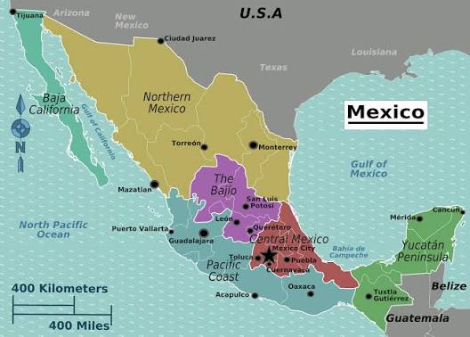
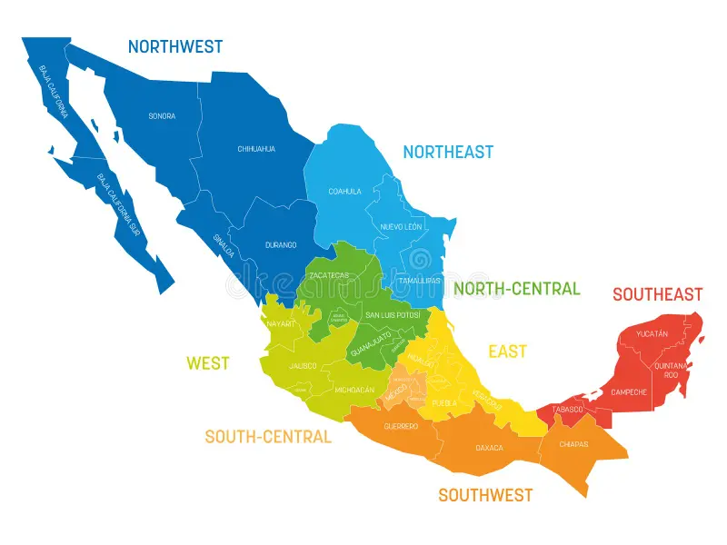

O MX república federativa localizada na América do Norte, limitada ao norte pelos Estados Unidos e ao sul pela Guatemala e Belize.

Seu território apresenta diferentes paisagens, povos, costumes,
comidas, músicas e manifestações culturais.
O país une tradições indígenas ancestrais (como a maia e a asteca) à herança colonial espanhola,
resultando em uma identidade única e diversa

Día de Muertos (Dia dos Mortos): Celebrado em 2 de novembro, é uma das festas mais famosas do planeta. Em vez de tristeza, é uma homenagem alegre com altares coloridos, velas e caveiras decoradas para receber os entes queridos.